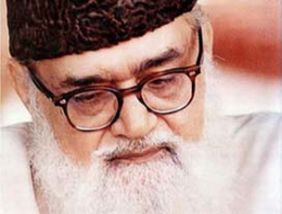

Ebü’l-Alâ el-Mevdûdî (1903 - 1979)

Mevdûdî, 1903 yýlýnda Haydarabad eyaletine baðlý Evrengabad kasabasýnda doðdu. Ýlk eðitimini avukat olan babasý Seyyit Ahmed Hasan’dan aldý. Eðitimi sýrasýnda Farsça, Arapça, Urduca dillerinin yaný sýra mantýk, hadis ve fýkýh ilimleri dalýnda da dersler aldý. 1915 yýlýnda ailesinin Haydarabad’a taþýnmasý üzerine eðitimine burada devam etti. Henüz eðitimini tamamlamamýþken, babasýnýn rahatsýzlýðý sebebiyle, okulundan ayrýlýp çalýþmaya baþladý. Bundan sonra eðitimini okul dýþýndan tekmil etmeye çalýþtý.1918 yýlýnda Delhi’ye giden Mevdûdî, burada çeþitli dergilerde yazýlar yazmaya baþladý. 1920 yýlýnda yazmýþ bulunduðu yazýsý dolayýsýyla gazete kapandý. Bu yazýsýnda sömürge yönetimini eleþtirmiþti. Bir süre sonra Cemiyet-i Ulema-i Hind tarafýndan neþredilen Müslim adlý gazetede editörlük yapmaya baþladý. Burada yazdýðý yazýlarý daha sonra kitap haline getirildi.
Yazýlarýnda Müslümanlarýn içinde bulunduðu sýkýntý ve zorluklarý ele aldý. Bu arada, Hindularla Müslümanlar arasýnda meydana gelen çatýþmalar fikir hayatý üzerinde büyük etkiler býraktý. Bir ara, sömürge halinde olan memleketinin insanlarýnýn Afganistan’a göç etmeleri gerektiðini savunan bir hareketin içinde yer aldý.
Mevdûdî, 1928 yýlýnda Haydarabad’a döndü. Burada Tercümanü’l-Kur’ân adlý dergiyi çýkarmaya baþladý. Muhammed Ýkbal’ýn daveti üzerine, 1938 yýlýnda Doðu Pencap’a gidip Darülislam’ýn kuruluþunda görev aldý. Bu kurum, eðitim ve araþtýrma amaçlý olarak düþünülmüþtü. Ancak, kendisi siyasi çalýþmalar da yapmak isteyince diðer bazý kurucularla arasýnda ihtilaf çýktý. Bu ihtilaftan sonra buradan ayrýlarak Lahor’a geçti.
Muhammed Ali Cinnah’ýn öncüsü olduðu Hindistan Müslümanlarý Birliði’ne karþý mesafeli durdu. Ona göre, bu cemiyet Ýslâmi esaslara yeterince hassasiyet göstermemekteydi. Diðer taraftan Ýngiliz sömürgesinden kurtulma amacýyla mücadele veren Cemiyet-i Ulema-i Hind’e de karþý çýkmýþ ve milliyetçilik hususundaki tavrýný eleþtirmiþti. Zamanýn iki önemli birliði ile ters düþtükten sonra, kendisi gibi düþünenleri bir araya toplayarak Aðustos 1941’de Cemaat-i Ýslâmî adlý teþkilatý kurdu.
Mevdûdî, 1947 yýlýnda Pakistan’ýn kurulmasýndan sonra Lahor’a yerleþti. Burada bulunan Cemaat-i Ýslâmî teþkilatýnýn liderliðini yaptý. Bu tarihten sonra, Pakistan’da Ýslâm esaslarýnýn geçerli olmasý için çalýþtý. 1948 yýlýndan itibaren radyo programlarý yaptý. Ayrýca, Lahor Hukuk Fakültesi’nde Ýslâm hukuku üzerinde konuþmalar yaptý. Ýslâm esaslarýna aðýrlýk veren bir anayasanýn uygulanmasý talebiyle bazý faaliyetlerde bulundu. Pakistan hükümetinin; Allah’ýn iradesi ve emirlerine uymasý, hukuk sisteminin Ýslâm hukukuna dayanmasý, Ýslâm hukukuna aykýrý olan her þeyin hükümsüz hale getirilmesi gerektiðini savundu. Faaliyetleri hükümetin hoþuna gitmeyince aralarý açýldý. Hükümetin politikalarýný eleþtirmesi üzerine 1948 yýlýnda tutuklandý. Kamuoyunun büyük tepkisi üzerine 1950 yýlýnda serbest býrakýldý.
1951 yýlýnda farklý fikirlere sahip olan guruplarýn temsilcilerini Karaçi’de toplayan Mevdûdî, Ýslâm devletinin ilkeleri konusunda anlaþtýklarýný ilan etti. Ýki yýl sonra benzer bir toplantý daha yaptý ve ayný yönde karar aldýrdý. Diðer taraftan, 1 Aðustos 1951 tarihinde Hindistan’da toplanan bir ulema heyeti, Mevdûdî’nin kurmuþ bulunduðu teþkilatla Müslümanlarý ayrý bir yola sevk ettiðine karar verdikleri gibi, yazdýklarý kitap ve gazetelerde de ayný düþünceye yer verdiler. Pakistan’daki bazý alimler de benzer ifadelerle Mevdûdî’nin kitaplarýnýn zararlý olduðunu bildirdiler.
Mevdûdî, Pakistan’da giderek yayýlan Kadiyanilik hareketine karþý çýktý. Bu hareketin aleyhinde bir risale kaleme aldý. Pencap’ta bunlara karþý bir gösteri düzenledi. Gösteri ve yazýlarýyla kýþkýrtýcý hareketlerde bulunduðu gerekçe gösterilerek askeri mahkeme tarafýndan tutuklandý ve ölüm cezasýna çarptýrýldý. Ancak, dünya çapýnda yapýlan baskýlar üzerine bu kez sivil bir mahkeme tarafýndan yargýlandý. Cezasý ömür boyu hapse çevrildi. Yüksek mahkeme ise beraatýna hükmetti.
1956 yýlý baþýndan itibaren seri konferanslar vermeye baþlayan Mevdûdî, daha çok Ýslâm Anayasasý konulu konuþmalar yaptý. Bazý þehirleri dolaþtý. Yaptýðý konuþma ve düzenlediði konferanslarla, hukuki alanda bazý düzenlemelerin yapýlmasýnda büyük etkisi oldu. 1958 yýlýnda darbe yapan Eyüp Han anayasayý yürürlükten kaldýrdýðý gibi, siyasi partileri de kapattý. Bu arada Cemaat-i Ýslâmi’nin faaliyetlerine de son verildi.
Mevdûdî, Pakistan dýþýna da çýkarak Beyrut ve Þam’ý ziyaret etti. Buralarda Ýhvan-ý Müslimin’in ileri gelenleriyle görüþmelerde bulundu. Daha sonra Suudi Arabistan, Suriye, Ürdün ve Mýsýr’a da giderek seyahatlerde bulundu. Bir süre Suudi Arabistan’da üniversitenin kuruluþ çalýþmalarý ve ilmi heyetinde bulundu. Siyasi faaliyetlere konan yasaklarýn kaldýrýlmasý üzerine ülkesine döndü. 1963 yýlýnda Lahor’da Cemaat-i Ýslâmi’nin toplantýsý sýrasýnda suikasta uðradý. Ancak, yara almadan kurtuldu. Darbe yönetimi tarafýndan hazýrlanan anayasaya karþý çýkmasý üzerine 1964 yýlýnda yeniden tutuklandý. Dokuz ay hapis yattýktan sonra serbest kaldý.
1970 yýlýnda yapýlan genel seçimlere partisi Cemaat-i Ýslâmi de katýldý. Ancak, bu seçimde milletvekili çýkarýlamadý. Bir süre sonra saðlýðýnýn bozulmasý üzerine cemaatin liderliðini býraktý. 1975 yýlýnda Cemaatin siyasetten çekilmesini tavsiye ettiyse de þurada bu tavsiyesi kabul edilmedi. Daha sonraki dönemde Zülfikar Ali Butto’nun yönetimini þiddetle tenkit etti. Butto iktidarýna karþý darbe yapan Ziyaülhak yönetimine destek verdi. Tedavi için gittiði Amerika’da 1979 yýlýnda vefat etti. Cenazesi Pakistan’a getirilerek Lahor’daki evinin bahçesine defnedildi.
Mevdûdî ile ilgili Risale-i Nurda herhangi bir bilgi ve deðerlendirme yer almamaktadýr. Gerek Bediüzzaman ve gerekse talebeleri tarafýndan yazýlan mektuplarda da ismi geçmemektedir. Sadece, Pakistan’dan mektup gönderen M. Sabir Ýhsanoðlu’nun bir mektubunda ismi geçmektedir; “…Nehru ve baþka Hindûlar, Islâmiyetin düþmanýdýrlar. Maalesef, Müslüman devletler bunu bilmiyorlar. Nehru, Keþmirli Müslümanlarý öldürtüyor. Said Nursî’ye gidip Hindli Müslümanlar hakkýnda söyle ki, kendi memleketinde buna karþý yazýlsýn. Said Nursî Hazretlerine burada çok hürmet vardýr. Onu severiz, onun sýhhat ve uzun hayatý için duâ ederiz. Ýslâm dünyasýnda Said Nursî’nin eþi yoktur. Mýsýr’da bir Said el-Benna var idi, þehit edilmiþtir; Yutmiz’de Ikbal var idi, vefât etmiþtir; hâlen bir Mevdûdî var, baþka büyük adamlar da vardýr; lâkin Üstadýmýz gibi yoktur. Üstad, Islâm dünyasýnýn cevheridir…” (Tarihçe- Hayat, 1996, s. 622).
Eserleri
Mevdûdî, eserlerinin büyük bir kýsmýný Urduca dilinde yazmýþtýr. Bazý eserleri Türkçe’ye de çevrilmiþtir. Türkçe’ye Tefhimü’l-Kur’ân Meali olarak çevrilen eserini Lahor’da yayýmlamýþtýr. 1942 yýlýndan itibaren yayýmlamaya baþlayýp 1972 yýlýnda tamamladýðý eseri Tercümanü’l-Kur’ân adýný taþýmaktadýr. Eserinde surelerin nüzulü, dönemin þartlarý, Ýslâma dâvet sýrasýnda karþýlaþýlan güçlükleri ele almýþtýr. Bu eser Türkçe’nin yaný sýra bir çok dilde tercüme edilerek neþredilmiþtir. Bu iki eser Tefsir ve Hadis dalý ile ilgilidir. Bunlarýn dýþýnda Akaid dalýnda Diniyyat; Fýkýh dalýnda El-Cihad fi’l-Ýslâm; Siyaset ile ilgili olarak Türkî meyn Ýsaiyon ki Halet, Ýslâm ka Nazariye-i Siyasî; Eðitim dalýnda Talimat adlý eserlerinin yaný sýra muhtelif dallarda çok sayýda eser kaleme almýþtýr.